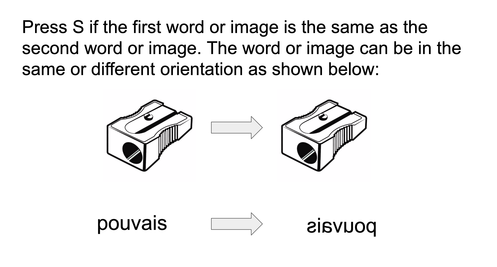
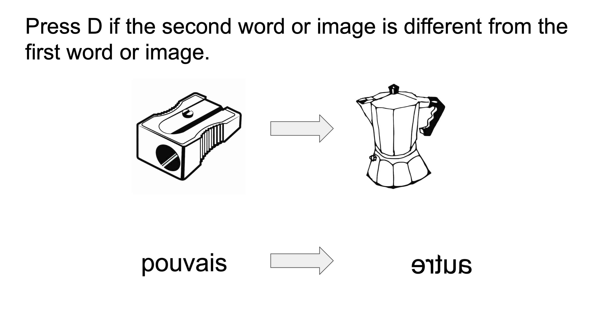

<!DOCTYPE html>
<html>

<head>
  <script src="jspsych/dist/jspsych.js"></script>
  <script src="jspsych/dist/plugin-instructions.js"></script>
  <script src="jspsych/dist/plugin-image-keyboard-response.js"></script>
  <script src="jspsych/dist/plugin-html-keyboard-response.js"></script>
  
  <link rel="stylesheet" href="jspsych/dist/jspsych.css"></link>
  <style>
    img {
      width: 50px
    }
  </style>
</head>
<body></body>
<script>
var jsPsych = initJsPsych({
    on_finish: function() {
      jsPsych.data.displayData('csv');
    }
});

var subject_id = jsPsych.data.getURLVariable('PROLIFIC_PID');

jsPsych.data.addProperties({
    subject_id: subject_id
});

var timeline_list = []
const image_list=["1","2","3","4","5","6","7","8","9","10","11","12","13","14"]
for (let i=0; i <image_list.length; i++)
//normal-same
{
item = image_list[i]
timeline_list.push({pair1: "img2/tools/"+item+".jpg", pair2: "img2/tools/"+item+".jpg", answer: 'SO'}) //tools
timeline_list.push({pair1: "img2/faces/"+item+".jpg", pair2: "img2/faces/"+item+".jpg", answer: 'SH'}) //faces
timeline_list.push({pair1: "img2/french/"+item+".jpg", pair2: "img2/french/"+item+".jpg", answer: 'SR'}) //french
timeline_list.push({pair1: "img2/jap/"+item+".jpg", pair2: "img2/jap/"+item+".jpg", answer: 'SJ'}) //japanese
timeline_list.push({pair1: "img2/false/"+item+".jpg", pair2: "img2/false/"+item+".jpg", answer: 'SM'}) //false words
//normal-different
const different = image_list.filter(difimage => difimage!=item)
const random_different = different[Math.floor(Math.random()*different.length)]
timeline_list.push({pair1: "img2/tools/"+item+".jpg", pair2: "img2/tools/"+random_different+".jpg", answer: 'DO' }) //tools
timeline_list.push({pair1: "img2/faces/"+item+".jpg", pair2: "img2/faces/"+random_different+".jpg", answer:'DH'}) //faces
timeline_list.push({pair1: "img2/french/"+item+".jpg", pair2: "img2/french/"+random_different+".jpg", answer: 'DR'}) //french
timeline_list.push({pair1: "img2/jap/"+item+".jpg", pair2: "img2/jap/"+random_different+".jpg", answer: 'DJ'}) //japanese
timeline_list.push({pair1: "img2/false/"+item+".jpg", pair2: "img2/false/"+random_different+".jpg", answer: 'DM'}) //false words
//mirror-same
timeline_list.push({pair1: "img2/tools/"+item+".jpg", pair2: "img2/Mtools/"+item+".jpg", answer: 'SO' }) //tools
timeline_list.push({pair1: "img2/faces/"+item+".jpg", pair2: "img2/Mfaces/"+item+".jpg", answer: 'SH'})// faces
timeline_list.push({pair1: "img2/french/"+item+".jpg", pair2: "img2/Mfrench/"+item+".jpg", answer: 'SR'}) //french
timeline_list.push({pair1: "img2/jap/"+item+".jpg", pair2: "img2/Mjap/"+item+".jpg", answer: 'SJ'}) //japanese
timeline_list.push({pair1: "img2/false/"+item+".jpg", pair2: "img2/Mfalse/"+item+".jpg", answer: 'SM'}) //false words
//mirror-different
timeline_list.push({pair1: "img2/Mtools/"+item+".jpg", pair2: "img2/Mtools/"+random_different+".jpg", answer: 'DO' }) //tools
timeline_list.push({pair1: "img2/Mfaces/"+item+".jpg", pair2: "img2/Mfaces/"+random_different+".jpg", answer:'DH'}) // faces
timeline_list.push({pair1: "img2/Mfrench/"+item+".jpg", pair2: "img2/Mfrench/"+random_different+".jpg", answer: 'DR'}) // french
timeline_list.push({pair1: "img2/Mjap/"+item+".jpg", pair2: "img2/Mjap/"+random_different+".jpg", answer: 'DJ'}) // japanese
timeline_list.push({pair1: "img2/Mfalse/"+item+".jpg", pair2: "img2/Mfalse/"+random_different+".jpg", answer: 'DM'}) // false words
}

var instruct = {
  type: jsPsychInstructions,
  pages: [
    'Welcome to the experiment. By answering the following questions, you are participating in a study being performed by cognitive scientists in the Stanford Department of Psychology. If you have questions about this research, please contact us at stanfordpsych251@gmail.com. You must be at least 18 years old to participate. Your participation in this research is voluntary. You may decline to answer any or all of the following questions. You may decline further participation, at any time, without adverse consequences. Your anonymity is assured; the researchers who have requested your participation will not receive any personal information about you. Click next to continue to the experiment.',
    'Directions: You will be presented one image after another. Press S if the first word or image is the same as the second word or image. The word or image can be in the same or different orientation. Press D if the second word or image is different from the first word or image. ',
    // '<br>'+
    // ' </img>',
    // '<br>'+
    // '</img>',
    'Let us try two examples. Click next to begin trial.'
  ],
  show_clickable_nav: true
}

var ex1 = {
  timeline: [
    {
            type: jsPsychImageKeyboardResponse,
            stimulus: 'img2/tools/2.jpg',
            trial_duration: 200,
            choices: "NO_KEYS"
        },
        {
            type: jsPsychHtmlKeyboardResponse,
            stimulus: '+',
            choices: "NO_KEYS",
            trial_duration: 300
        },
        {
            type: jsPsychImageKeyboardResponse,
            stimulus: 'img2/Mtools/2.jpg',         
            choices: "NO_KEYS",
            trial_duration: 200
        },
        {
            type: jsPsychHtmlKeyboardResponse,
            stimulus: "Press S if you see the same image, Press D if you see a different image",         
            choices: ["S", "D"]
        }
  ]
}
var correct1 = {
  type: jsPsychInstructions,
  pages: [
    'The two images were the same, but in different orientation. Let us try another example. Click next to continue.'
  ],
  show_clickable_nav: true
}
var ex2 = {
  timeline: [
    {
            type: jsPsychImageKeyboardResponse,
            stimulus: 'img2/jap/2.jpg',
            trial_duration: 200,
            choices: "NO_KEYS"
        },
        {
            type: jsPsychHtmlKeyboardResponse,
            stimulus: '+',
            choices: "NO_KEYS",
            trial_duration: 300
        },
        {
            type: jsPsychImageKeyboardResponse,
            stimulus: 'img2/jap/3.jpg',         
            choices: "NO_KEYS",
            trial_duration: 200
        },
        {
            type: jsPsychHtmlKeyboardResponse,
            stimulus: "Press S if you see the same image, Press D if you see a different image",         
            choices: ["S", "D"]
        }
  ]
}
var correct2 = {
  type: jsPsychInstructions,
  pages: [
    'The two words/images were different. Click next to begin the task.'
  ],
  show_clickable_nav: true
}

var face_name_procedure = {
    timeline: [
    {
            type: jsPsychImageKeyboardResponse,
            stimulus: jsPsych.timelineVariable('pair1'),
            trial_duration: 200,
            choices: "NO_KEYS"
        },
        {
            type: jsPsychHtmlKeyboardResponse,
            stimulus: '+',
            choices: "NO_KEYS",
            trial_duration: 300
        },
        {
            type: jsPsychImageKeyboardResponse,
            stimulus: jsPsych.timelineVariable('pair2'),         
            choices: "NO_KEYS",
            trial_duration: 200
        },
        {
            type: jsPsychHtmlKeyboardResponse,
            stimulus: "Press S if you see the same image, Press D if you see a different image",         
            choices: ["S", "D"],
            data: jsPsych.timelineVariable('answer')

        }
    ],

    timeline_variables: timeline_list,
    randomize_order: true
}

  jsPsych.run([instruct, ex1, correct1, ex2, correct2, face_name_procedure]);
</script>

</html>